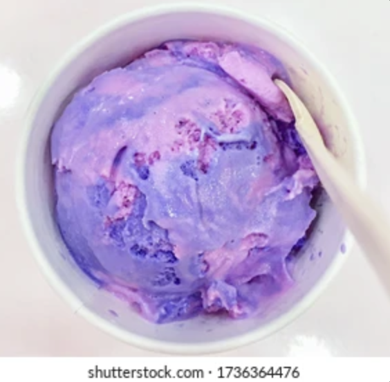
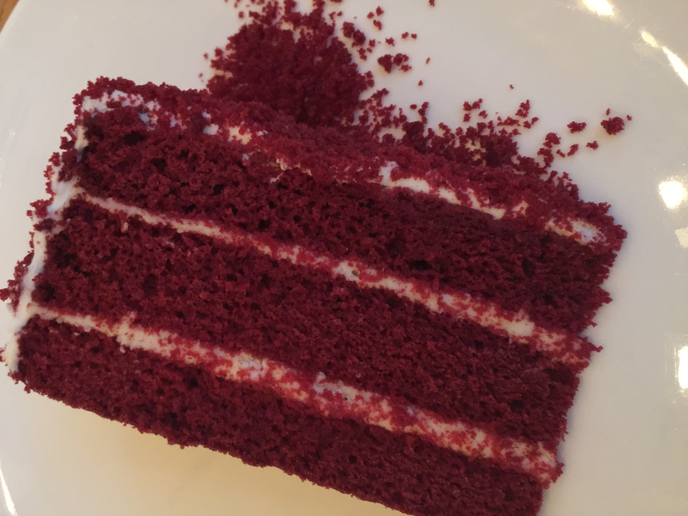
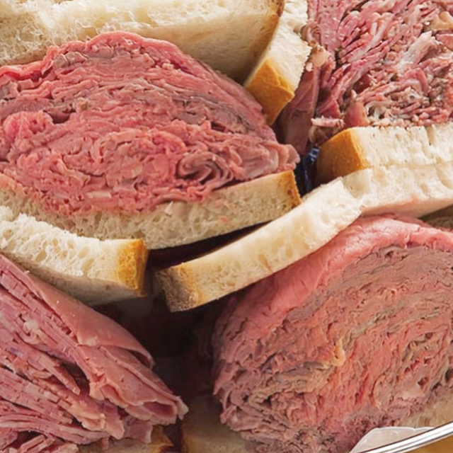
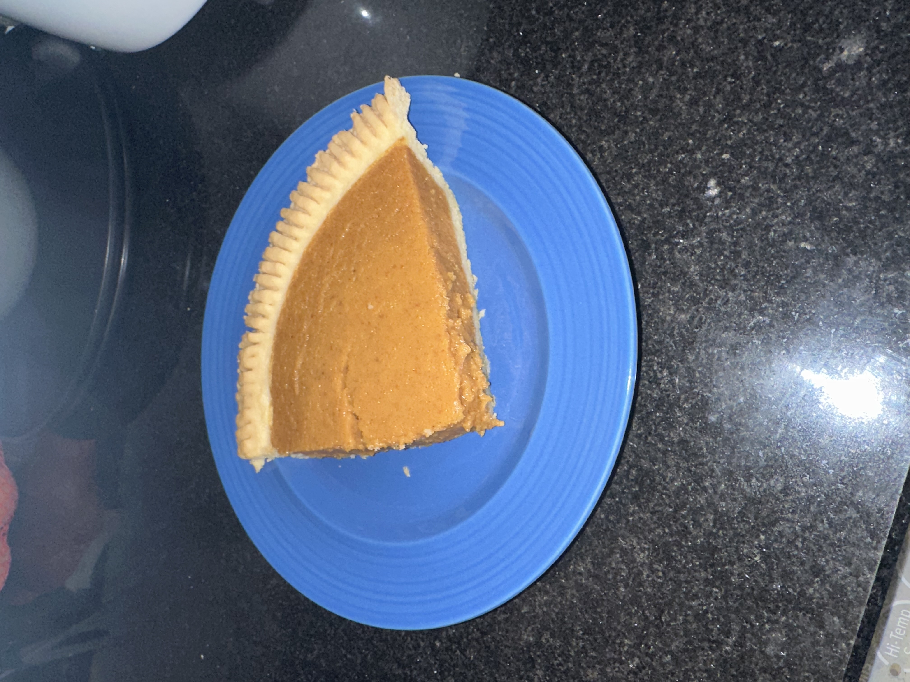
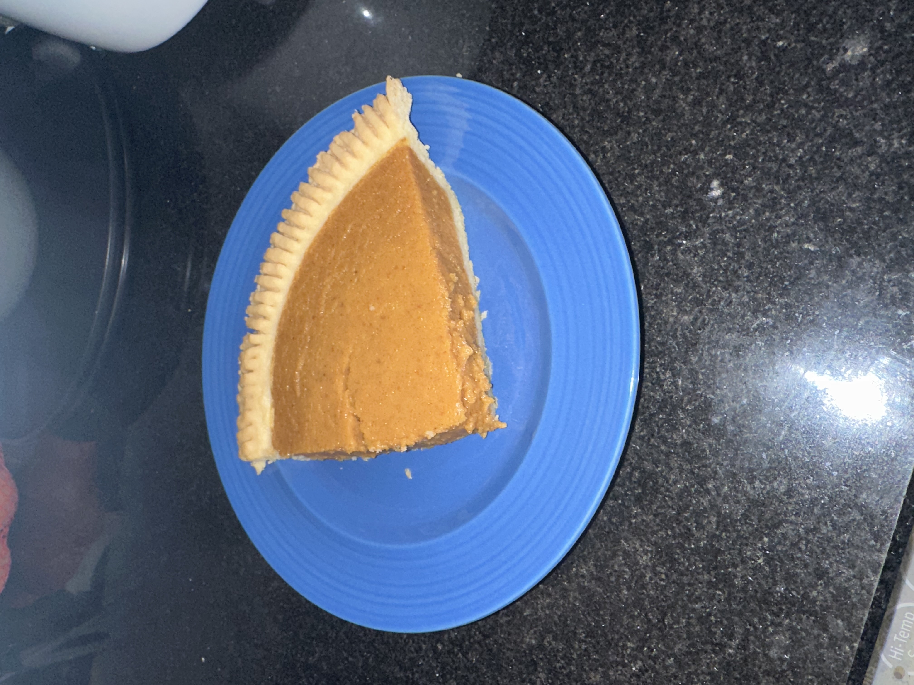
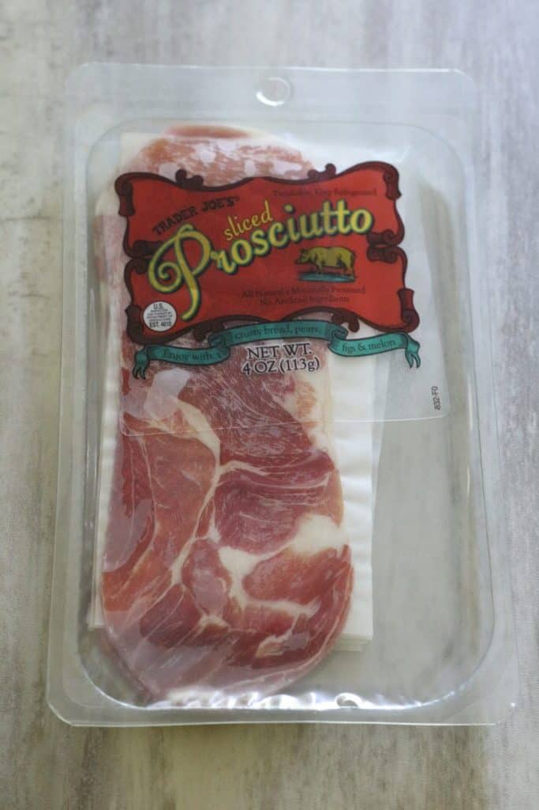

here are some of my favorite unusual flavors of food:  [1]  [2]  [3]
 [4]
 [5]
[4]
 [5]
[1] baskin robbin cotton candy flavor
[2] red flavor
[3] also red flavor
[4] blue flavor
[5] pumpkin spice flavor

this is one of my favorite 'red' snacks.
do YOU like grocery shopping?
(this button is real.)